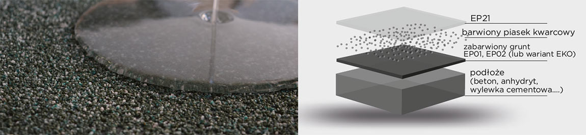
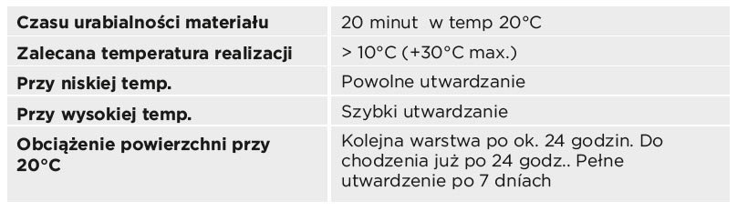
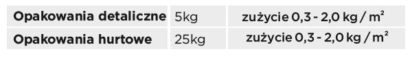

Przeźroczysta powłoka o szerokim zastosowaniu, do zamknięcia powierzchni z kolorowymi piaskami kwarcowymi. 2-komponentowa epoksydowa bezbarwna masa.
Finalna bezbarwna wierzchnia warstwa na wybrane epoksydowe powierzchnie TopStone, barwione piaski kwarcowe.
- zamykająca warstwa, kolorowych piasków kwarcowych np. kuchnie, jadalnie, korytarze, biura, szatnie, hale produkcyjne,,warsztaty, galerie,oraz wszystkie powierzchnie gdzie jest niezbędna wyższa estetyka oraz podwyższona wytrzymałość mechaniczna
- zamykająca warstwa ochronna na wylewkę TopStone EP11
- zamykająca warstwa ochronna na wylewkę TopStone EP11 z zasypem kolorowych chipsów
- lakier przeznaczony do pokrywania perforowanych tapet (przed aplikacją sprawdzić kompatybilność lakieru i tapety na próbce)
- warstwa zamykająca na przedmiotach dekoracyjnych (zalecamy przeprowadzić test przed aplikacją)
- po dodaniu wypełniacza TopStop interier możliwość wykonania antypoślizgowego lakieru przeznaczonego na powierzchnie poziome
- bardzo dobra przeźroczystość
- estetyczna powierzchnia
- doskonałe właściwości mechaniczne , dobra odporność na chemikalia
- do szerokiego spektrum zastosowania
- wodoszczelny
- łatwe w utrzymaniu czystości
- powłoka typu połysk
- estetyczna antypoślizgowa lub gładka powierzchnia
-epoksydowy dwuskładnikowy, bezbarwny, o niskiej lepkości , bez rozpuszczalników i nonylfenolu, przyjazny dla środowiska naturalnego

W czasie aplikacji i utwardzania TopStone EP21- zabroniony jest kontakt z wodą i innymi substancjami chem. Przy ogrzewaniu pomieszczeń w czasie aplikacji nie używać ogrzewaczy gazowych, naftowych, które produkują w miejscu realizacji CO i parę wodną, które mają negatywny wpływ na jakość wykonywanej powierzchni.
Podane zużycia materiałów mogą się różnić w zależności od konkretnych warunków i konkretnego zastosowania.

W temp. > +12°C < +25°C, w suchych pomieszczeniach, w oryginalnych opakowaniach. Data ważności - na opakowaniu.
1. Na utwardzoną powierzchnię TopStone EP11 lub barwny píasek kwarcowy aplikować wg poniższej technologii TopStone Ep21.
2. Przygotowanie narzędzi: pojemnik do wymieszania dwóch składników spoiwa wg instrukcji na etykiecie, míeszadło, paca metalowa, paca gumowa , wałek odpowietrzający „jeż”
3. Dokładnie wymieszać składniki A i B TopStone EP21 za pomocą wolnoobrotowego mieszadła przez okres ok. 3 minut.
4. Tak przygotowany materiał zużyć do 20-tu minut prz temp 20°C właściwą technologią np. wałkiem, gumową pacą itp.
5. TopStone EP21 aplikować przy wzrastającej temperaturze = obniżenie ryzyka kondensacji pary wodnej na powierzchni materiału.
Nigdy nie ściągać/zbierać pacą materiału ze ścianek naczynia - aplikacja tego materiału (który może być nie wymieszany) może spowodować nieutwardzone miejsca, plamy na powierzchni.
Przed aplikacją TopStone EP11 sprawdzić czy powierzchnia jest dokładnie zagruntowana bez bąbli powietrza, nacieków i innych nierówności czy wad podłoża.
W przypadku konieczności powierzchnię wyrównać TopStone Fillerem lub przeprowadzić kolejne gruntowanie.
TopStone EP11 zaraz po wymieszaniu aplikujemy. Jeśli tego nie dopełnimy, przy następnym mieszaniu np. 5-10 min. może nastąpić gwałtowna reakcja egzotermiczna (bardzo szybkie utwardzenie z wydzieleniem ciepła). Narzędzia oraz skórę w przypaku zabrudzenia nieutwardzoną masą czyścimy TopStone Cleanerem lub acetonem.